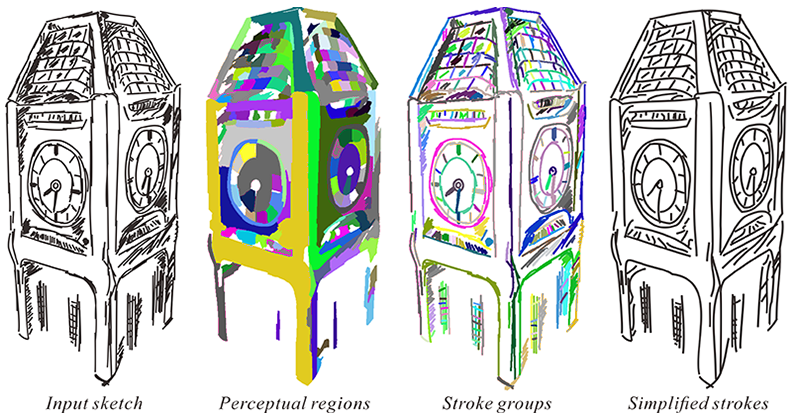

| SIGGRAPHASIA2015 | |
|
Closure-aware Sketch Simplification |
|
|
ACM Transactions on Graphics (SIGGRAPH Asia 2015 issue), Vol. 34, No. 6, November 2015, pp. 168:1-168:10. |
|
|
 |
|
Abstract In this paper, we propose a novel approach to simplify sketch drawings. The core problem is how to group sketchy strokes meaningfully, and this depends on how humans understand the sketches. The existing methods mainly rely on thresholding low-level geometric properties among the strokes, such as proximity, continuity and parallelism. However, it is not uncommon to have strokes with equal geometric properties but different semantics. The lack of semantic analysis will lead to the inability in differentiating the above semantically different scenarios. In this paper, we point out that, due to the gestalt phenomenon of closure, the grouping of strokes is actually highly influenced by the interpretation of regions. On the other hand, the interpretation of regions is also influenced by the interpretation of strokes since regions are formed and depicted by strokes. This is actually a chicken-or-the-egg dilemma and we solve it by an iterative cyclic refinement approach. Once the formed stroke groups are stabilized, we can simplify the sketchy strokes by replacing each stroke group with a smooth curve. We evaluate our method on a wide range of different sketch styles and semantically meaningful simplification results can be obtained in all test cases. |
Paper (PDF, 1.9M) |
|||
|
Supplementary Material (PDF, 1.4M) |
||||
|
BibTex:
@article{liu-2015-closure, month = {November}, year = {2015}, volume = {34}, number = {6}, pages = {168:1--168:10}, } |